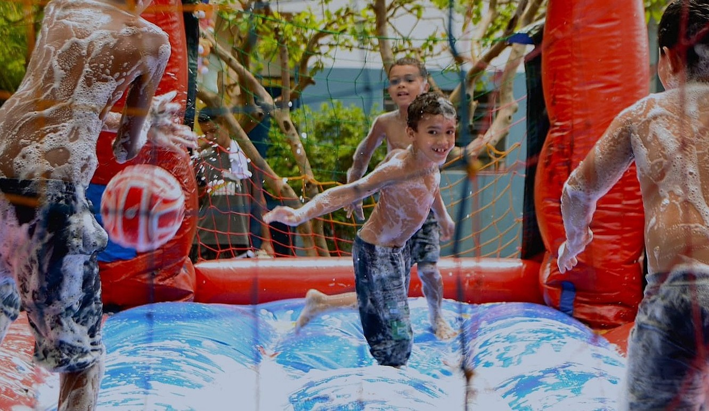
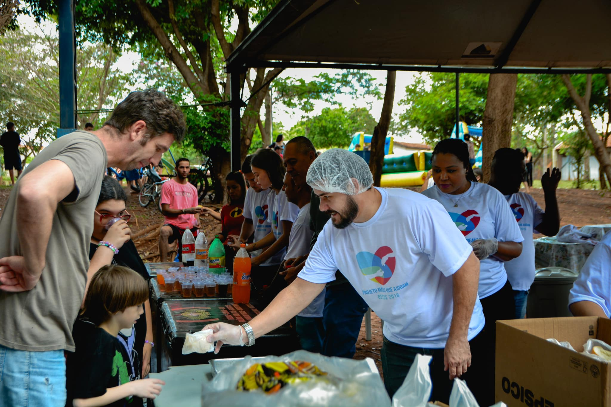
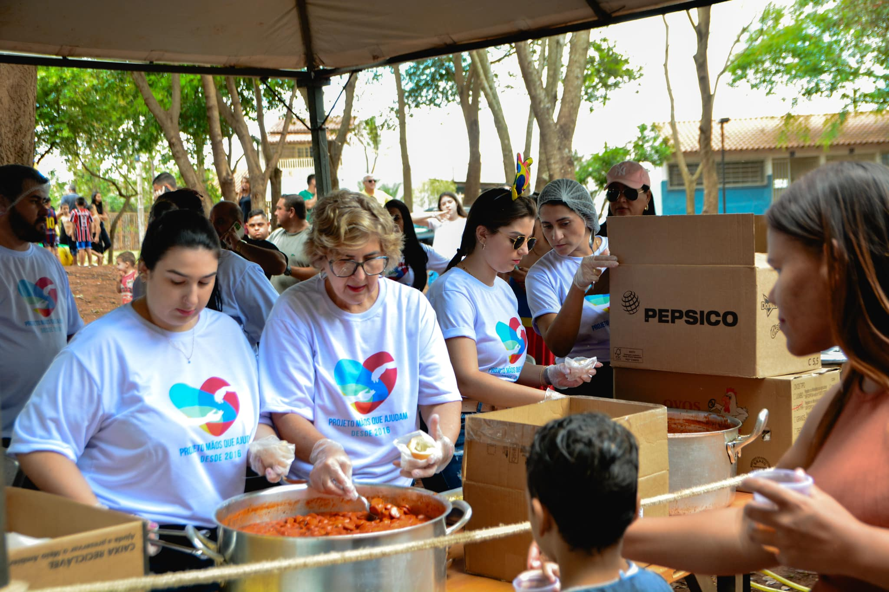

Nossos Projetos
Conheça em detalhes cada uma das iniciativas que estão transformando vidas

Educação para Todos
Nosso programa educacional atende mais de 500 crianças em 15 comunidades, oferecendo aulas de reforço, material escolar completo e acompanhamento pedagógico individualizado.
Saúde Comunitária
Realizamos mutirões de saúde mensais com atendimento médico, odontológico e psicológico gratuito, além de campanhas de prevenção e educação em saúde.


Segurança Alimentar
Nosso programa de segurança alimentar distribui cestas básicas semanalmente e mantém uma cozinha comunitária que oferece 200 refeições diárias.